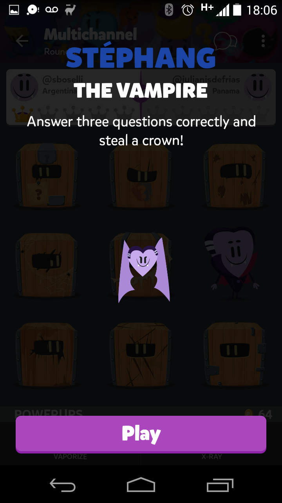

Analizando gameplay en TCK desde el punto de vista de las mecanicas "Anti-fun".
Anti-fun mechanics (o Game Design Anti-Patterns) es un concepto del mundo del Game Design para describir mecanicas de gameplay que funcionan correctamente de acuerdo al spec pero una vez implementadas generan mas descontento y enojo que diversion y placer.
Esto a su vez causa un loop de feedback emocional negativo y el posterior efecto conocido como "tilting" en el mundo del poker:
[...] => enojo => desconcentracion => mala eleccion => enojo => [...]
Nuestro objetivo es reducir al minimo estas interacciones que generan efectos secundarios negativos.
El concepto se popularizo a partir de una discusion abierta entre Zileas (VP de Game Design de Riot Games) y la comunidad del LoL.
Zileas mantiene una lista actualizada describiendo varios tipos de estas mecanicas, muchas de las cuales no nos competen por el tipo de juego.
Vamos a enfocarnos en ciertos aspectos de gameplay de TCK teniendo en cuenta algunas de estas mecanicas.
Veamos primero las mecanicas que nos competen...
"...when you present the player with one or more choices that appear to be valid, but one of the choices is just flat wrong."
Presentar al usuario lo que aparenta ser una eleccion valida, pero en la cual una de las opciones es incorrecta o simplemente inutil en el contexto.
"...when you give what appears to be an interesting choice that is then completely unrewarding, or ineffective at the promised action."
Mostrar al usuario lo que a priori parece una eleccion interesante, pero luego resulta completamente inefectiva, intrascendente o simplemente no gratificante.
"Skills are tools. Players count on them to do a job. ..."
Cuando le damos una herramienta al usuario con un fin determinado, y luego resulta que esa herramienta no logra satisfacer el rol prometido o solo lo logra en determinadas situaciones. Le damos una herramienta en la que no puede confiar.
"..the negative experience your opponents feel when you do something (they have no control over) that prevents them from 'playing their game', doing activities they consider fun, or even answering back."
Cuando la experiencia negativa generada por las acciones (unilaterales o no) del adversario es superior a la experiencia positiva genereda por las acciones propias.
El ejemplo mas clasico de esta situacion es el de un adversario realizando una accion sobre la cual no podemos intervenir o siquieria responder, y la sensacion de impotencia e injusticia que eso conlleva.
Presentar al usuario lo que aparenta ser una eleccion valida, pero en la cual una de las opciones es incorrecta o simplemente inutil en el contexto.
Prob de elegir (ciegamente) la opcion correcta:
Bomb: 50%
Double chance:
25% primer intento,
33% segundo intento;
=> 33% como maximo
Si no sabemos nada de la pregunta ni sospechamos cual respuesta puede ser la correcta, elegir Double Chance siempre esta mal (estadisticamente).
En este caso, la sensacion de malestar es diferida: se da en el momento en que el usuario identifica esta situacion y piensa hacia atras todas las veces que gasto mal sus monedas. Esa sensacion puede ser recurrente y sostenida en el tiempo: cada vez que necesite usar monedas y tenga fondos insuficientes va a recordar su error inicial (como en la vida cuando tomamos una mala decision y luego nos reprochamos durante meses aunque no podamos cambiar el pasado).
1. No hacer nada. Existe el contra-argumento que dice que hay un lugar para Double Chance, cuando el usuario sospecha cual puede ser la respuesta correcta o esta indeciso entre dos (es necesario evaluar para cada caso en particular si en alguna de estas instancias Double Chance realmente tiene mas valor que Bomb).
2. Eliminar Double Chance. Si nos alineamos con el objetivo de intentar generar solo respuestas emocionales positivas, no hay necesidad de conservar Double Chance. Tres power ups que generan buena respuesta emocional, son mejores que 4 donde uno genera efectos secundarios negativos. Esta solucion es relativamente, de facil implementacion.
3. Reemplazar por un nuevo power up. Requeriria minimamente un tiempo de analisis y planeamiento, con una complejidad de implementacion de acuerdo a los requerimientos especificos del nuevo power up, con lo cual se vuelve una tarea dificil de estimar.
Mostrar al usuario lo que a priori parece una eleccion interesante, pero luego resulta completamente inefectiva, intrascendente o simplemente no gratificante.
Tina y Albert son los dos sospechosos "accidentales" de esta mecanica.
La palabra clave es "accidental", ya que Tina y Albert presentan un problema solo en una ocasion en particular: cuando el flow del gameplay es interrumpido por una respuesta incorrecta y el usuario pierde (se olvida) el ultimo estado del mapa.
Ya que el mapa es entonces la causa, veamos primero su caso puntual para luego regresar a Tina y Albert....
El problema aqui es externo: el mapa.
Si el mapa recibe mejoras, Tina y Albert no necesitan modificacion.
Cuando le damos una herramienta al usuario con un fin determinado, y luego resulta que esa herramienta no logra satisfacer el rol prometido o solo lo logra en determinadas situaciones. Le damos una herramienta en la que no puede confiar.
El mapa en TCK introduce un cambio importante respecto a Preguntados: la idea de una posible estrategia.
Si bien la eleccion de caja y sus resultados siguen siendo casi exclusivamente una cuestion de RNG, el mapa pasa a ser ahora una representacion del estado de la partida y un recuento del ida y vuelta de ambos participantes.
Tina y Albert a su vez, representan para el jugador una oportunidad estrategica de dar un gran salto hacia adelante y acercarse a la victoria.
Dicho esto, sabemos que ante una respuesta incorrecta hay una interrupcion completa del flow de gameplay. Nuestro problema se evidencia en el retorno a la partida: el usuario no tiene forma de decodificar el estado actual en base al mapa, repasar los ultimos movimientos ni continuar su estrategia previa (a menos que recuerde de memoria los ultimos movimientos de ambos!).
El mapa como herramienta estrategica se convierte entonces en un factor en el que no se puede confiar.
Lo cual nos lleva nuevamente a Tina y Albert...
Actualmente, es dificil recordar el estado de la partida y dificil distinguir entre las partidas. Las acciones para mejorar el mapa implican ayudar al usuario a recuperar/recordar el estado de las partidas activas, para que el mapa no genere problemas en cascada en otras features (Tina/Albert), y para lograr que la idea de usar el mapa estrategicamente sea una realidad.
1. Crear un nuevo sistema de diseno para el mapa, para simplificar el esfuerzo de memoria del usuario:
+ Usar el background para establecer tres/cinco "mundos" tematicos (ej: selva, castillo, oceano, etc). Cada partida simultanea de un usuario utiliza un "mundo" distinto.
+ Usar las cajas para para establecer el progreso dentro de la partida desde la 1er corona a la 5ta (ej: madera, bronce, plata, oro, platino; esta escala es ademas un standard en la industria para mostrar progreso).
Estos cambios combinados permiten que el cerebro identifique y memorice de manera mucho simple no solo la partida actual sino tambien su estado y previo desarrollo. Aunque no solucionan por completo el problema, su implementacion es mas simple que la segunda opcion.
2. Agregar en la pantalla del mapa un boton para acceder al historial de la partida o minimamente ver la ultima movida. Esta solucion implica un grado de complejidad alto para la implementacion, mas aun si no estamos conservando actualmente esta informacion.
Mostrar al usuario lo que a priori parece una eleccion interesante, pero luego resulta completamente inefectiva, intrascendente o simplemente no gratificante.
Veamos el rollercoaster emocional de este caso:
1. Seleccione una caja y abri a Tina, lo cual me pone contento: si tengo suerte (%50) y contesto bien tengo una corona!
2. Toco madera e invoco a la pachamama.
3. La suerte realmente no esta conmigo... Tome una mala decision y ahora me enfrento a Melissa. Intento sobrevivir pero en la primera pregunta me equivoco... Estoy enojado con mi desempeño y no tengo mas consuelo que esperar...
Mostrar al usuario lo que a priori parece una eleccion interesante, pero luego resulta completamente inefectiva, intrascendente o simplemente no gratificante.
...dos dias mas tarde:
4. Es mi turno ! Hmmmm......??? Que paso aca? Recuerdo fugazmente haber visto a Tina la ultima vez que jugue. Conteste bien aquel entonces?? Era esta partida o me estoy confundiendo con otra? Era este mapa y es la Tina que estoy viendo, o quizas fue en la corona anterior y esta Tina la abrio mi adversario??
En definitiva, perdi (olvide) el estado actual de la partida y no tengo como recuperarlo.
Si habia interactuado con Tina o Albert, elegido la caja incorrecta, fallado y mi adversario a su vez fallo, ya no tengo forma de capitalizar sobre su error (no capitalizar el mio, para lo cual el tampoco tuvo informacion disponible !). Ya no recuerdo el insight (ventaja) que Tina/Albert me habian dado en primer lugar.
La sensacion es la de la oportunidad perdida, y esta acentuada por el enojo propio de a) equivocarse en varias oportunidas, b) olvidar informacion importante y c) la impotencia de no poder capitalizar sobre errores ajenos.
La eleccion que se me ofrecio hace dos dias (via Tina/Albert) no solo se ha vuelto completamente inefectiva, sino que incluso ha generado nuevas emociones negativas.
El problema aqui es externo: el mapa.
Si el mapa recibe mejoras, Tina y Albert no necesitan modificacion.
Cuando la experiencia negativa generada por las acciones (unilaterales o no) del adversario es superior a la experiencia positiva genereda por las acciones propias.
Esta idea traza un paralelismo con el concepto de Loss Aversion; el cual esta extensivamente estudidado en los campos de Economia, Psicologia, Teoria de la Decision y Teoria del Juego. El mismo dice que una persona que pierde 100$ va a perder mas satisfaccion que la que va a ganar una persona que gana 100$ inesperadamente. La mayoria de los estudios situan ese diferencial en 2x.
Si extrapolamos a terminos que nos competen: perder una corona genera un malestar 2x superior al bienestar generado por ganar una corona.
De todas formas, tanto en Preguntados como en TCK existe un factor atenuante a la hora de considerar la mecanica: las partidas son jugadas en forma asincronica, lo cual nos resguarda (como victimas) de tener que presenciar impotentes como nos quitan lo ganado. A veces incluso, al regresar a una partida, ni nos damos cuenta que perdimos una corona (lo cual implica otro problema en cuanto a lo comunicacional, pero eso es otro tema).
Realisticamente, y ya que el net value de esta mecanica es en teoria 2x negativo, no existe necesidad de incluir este tipo de situaciones en juegos cuyo core gameplay no gira en torno al concepto de Zero-sum game (ej: poker).
1. Stephang resulta en un cambio neto de +1 C. al jugador activo y -1 al pasivo. Otra forma de expresarlo, pero sin generar respuesta emocional negativa en la persona pasiva (e incapaz de actuar) es simplemente cambiar a: +2 coronas para el jugador activo. Esto tambien elimina un problema que no repasamos respecto a usar Stephang cuando el jugador opuesto tiene 0 coronas y no hay que robar.
2. Cambiar la mecanica a un modo "desafio" para darle oportunidad al adversario de defenderse: si contesto bien la/s pregunta de Stephang, ahora mi adversario debe hacer lo mismo o perder la corona. El robo de corona se efectua solo si el adversario falla en su oportunidad de defensa.
Todas estas mecanicas tienen un hilo conductor:
generan una respuesta emocional negativa no intencional.
Es importante notar que este tipo de respuestas emocionales (desmotivacion, tedio, impotencia, desconcentracion, etc) son un factor muy importante (aun siendo a nivel inconciente) en el proceso mental de los usuarios a la hora de decidir si dejar de jugar o jugar mas.
Bajo condiciones ideales, queremos reducir al minimo posible estas interacciones y desasociar por completo la experiencia de juego de los estados mentales y emocionales negativos.
Si bien es dificil y a veces hasta tecnicamente imposible volver atras y cambiar cuanto sea necesario; es importante al menos reconocer estos patrones y tenerlos presentes a la hora de encarar un nuevo proyecto.
En la misma forma en que un libro bien escrito guia al lector a traves de una experiencia emocional premeditada, nosotros tambien debemos ser responsables de entender y guiar las respuestas emocionales inconscientes de nuestros jugadores. Esto a su vez, nos ayuda a garantizar o maximizar la efectividad de cada una de nuestras decisiones y acciones: deben cumplir el proposito para el que fueron creadas inicialmente, y cualquier efecto secundario negativo no deseado debe ser (idealmente) evaluado y depurado.
Comentarios/sugerencias: santiago.boselli@etermax.com / bi@etermax.com